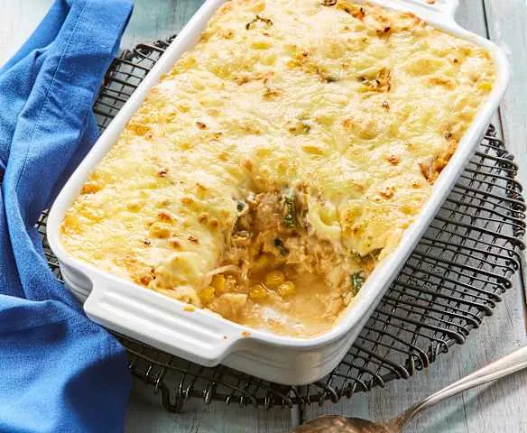

Libera tu chef interior con nuestra colección de recetas curadas. Instrucciones claras, ingredientes accesibles y el sabor que tanto buscas.

Elige tu categoría favorita y encuentra la receta perfecta
Las recetas más amadas por nuestra comunidad esta semana
Carne jugosa 80/20, queso cheddar derretido y la inconfundible salsa secreta ALALU en pan brioche tostado.
Doble carne ahumada al carbón, salsa BBQ casera, cebolla caramelizada y jalapeños encurtidos.
Capas de tortillas, pollo deshebrado, rajas de chile poblano, crema y queso Oaxaca gratinado.
Cerdo marinado en adobo de chile con achiote, piña caramelizada, cilantro y salsa verde.
Auténtica Carbonara romana sin crema: yemas de huevo emulsionadas con Pecorino, panceta crujiente y pimienta.
Salsa de tomate picante con ajo, chile de árbol y albahaca fresca. Sencilla, poderosa y vegetariana.
Textura fudgy por dentro, costra crujiente por fuera. Elaborado con chocolate 70% cacao de alta calidad.
El flan más cremoso con caramelo dorado. Elaborado al baño maría con queso crema para una textura perfecta.
Lechuga romana, aderezo César casero emulsionado, crutones dorados al ajo y virutas de Parmesano.
Betabel rostizado, queso de cabra cremoso, nueces tostadas y aderezo de miel-mostaza. Colorida y deliciosa.
Mole de chiles guajillo y ancho con maíz cacahuazintle y cerdo deshebrado. Con toda la guarnición tradicional.
Calabaza de castilla rostizada con jengibre, canela y leche de coco. Vegetariana, sin gluten y reconfortante.
Secretos de cocina para elevar tus platillos al siguiente nivel
Mantén siempre tus cuchillos afilados. Un cuchillo bien afilado es más seguro y produce cortes precisos.
La carne de res alcanza su punto ideal a 57°C. Usa un termómetro de cocina para resultados perfectos.
Sazona en capas durante la cocción. Agregar sal al final solo tapa el sabor, no lo integra.
Prepara y mide todos los ingredientes antes de comenzar. Cocinar fluye mejor cuando todo está listo.